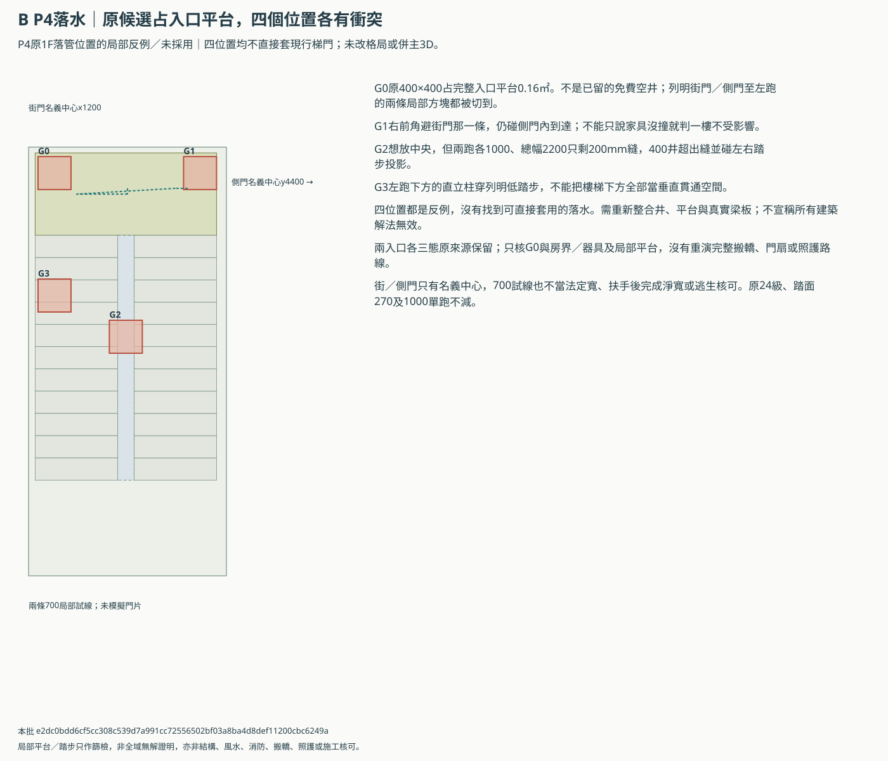
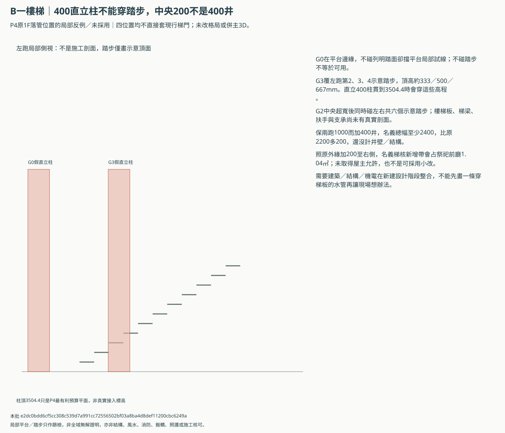
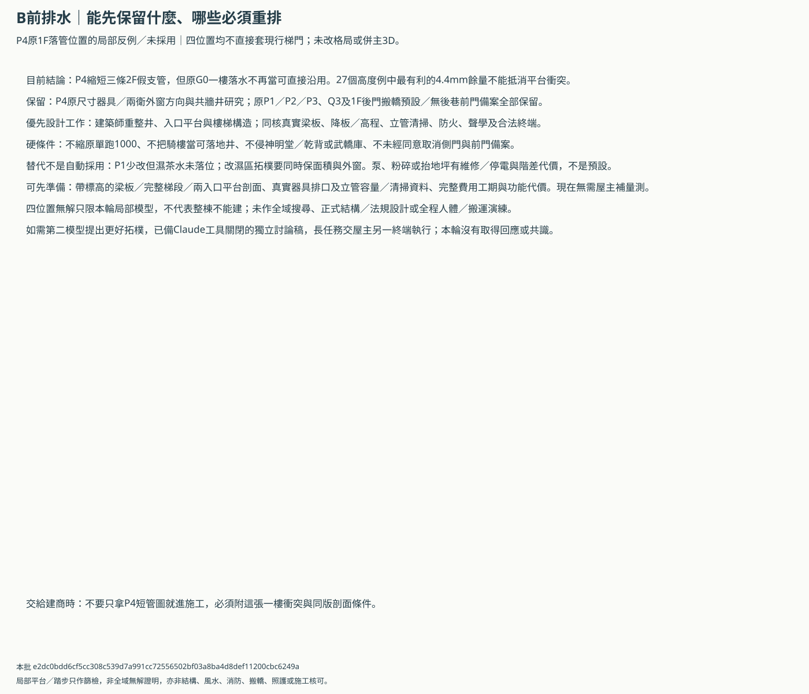

B前排水一樓落點：平台與踏步不能當空井
四個明列位置均不能直接套現行梯門，未採用；局部反例不是全域無解證明。P4三條短管保留研究，1F落水仍須重排，不併主3D。
原G0占1F入口平台0.16㎡，碰兩條局部試線；G1右角仍擋側門，中央200縫不夠400且G2／G3穿踏步投影。四個明列位置都不能直接套現行梯／門，不代表所有建築整合無解。保P4短支管研究但先做井、平台及梁板整合，不縮梯、不占騎樓、不放寬祭祀，未併主3D。
原平台與四個400候選位置


直立柱碰踏步與中央200mm限制


保留、重排及替代條件


兩入口各三態保持原來源
| 版本 | 狀態 | G0占平台㎡ | G0占騎樓㎡ | 已核可搬運 |
|---|---|---|---|---|
| b-rear-split | daily | 0.16 | 0.0 | 否，未重演 |
| b-rear-split | ritual | 0.16 | 0.0 | 否，未重演 |
| b-rear-split | carry | 0.16 | 0.0 | 否，未重演 |
| b-front-split | daily | 0.16 | 0.0 | 否，未重演 |
| b-front-split | ritual | 0.16 | 0.0 | 否，未重演 |
| b-front-split | carry | 0.16 | 0.0 | 否，未重演 |
建議先做
- G0不再當原平台內免費落管；保留P4器具方向供完整建築／機電重排，不進施工圖。
- 先由建築師同版整合管井、原1000梯寬、入口平台及兩門，結構與機電核梁板／通氣／清掃；不占騎樓或侵祭祀。
- 若整合仍不成立，再比較完整濕區拓樸及代價；P1也缺濕茶水，回退不等於全部滿足，不預設泵或抬地坪。
- 找不到更好解法時可用獨立Claude討論稿交叉研究；長討論另終端執行，本輪沒有回應或共識。
假設與限制
- 本輪只對P4原1F落水候選作局部平台／踏步篩檢，不改ABC／3D、P4或Q3、24級一樓梯及兩種搬轎版；候選未採用，也沒有新核准落水。
- 原G0不是已留空井：400×400全部占入口平台0.16㎡，碰兩條700局部試線。這足以否定直接沿用該試線，但不證明所有人體路徑或全棟重排都不可能。
- G1移右角可避街門局部試線，仍碰神明堂側門內到達；不能只看街門就說一樓不受影響，也不預設取消或改側門。
- G2中央僅200mm，不夠400預留，會碰左右踏步投影；G3左跑下方垂直柱亦穿列明踏步高度。踏步／梯梁不是可隨意穿管的空洞。
- 400是原整組管井預留，不是400管徑；單一實管或多管配置、隔音防火包覆與檢修尺寸未知，不能任意縮成200或減小坡度取得通過。
- 垂直400柱只是假設從1F模型0延伸到P4最有利3504.4mm預算平面，不是實際排水接入高程或管線；與踏步高程相交是需改設計的反例，不是結構穿孔許可。
- 街／側門僅依來源名義中心定位，未模擬門片、門框、門檻、實際出入口或扶手；700是在平台內的兩條局部方塊，不當完整700淨寬、照護、搬轎或逃生核可。
- 兩個1F版本各三態逐一核G0與列明器具、房界和祭祀／乾背／武轎庫；搬運路線未重演，前版不借後版通路，後巷權利未核。
- 保兩跑各1000，中央增至400至少需2400名義梯幅，比原2200多200，還未含管井壁或新結構；照原外緣一起向右加200的名義梯核會侵祭祀前廳1.04㎡，不是可採用小改。
- 本輪只排除四個明列位置，沒有全域搜尋所有建築構造。首選是建築師把管井、樓梯／入口平台及真實梁板一起作新建整合設計，不讓現行四候選直接進施工圖。
- 前公衛P1或不同濕區拓樸可比較，但P1濕茶水未落位，舊後窗案也有面積缺口；泵、粉碎馬桶、抬地坪與外牆／鄰地管均不作默認解法。
- P4的三條短支管與4.4mm算式餘量仍留作比較，不能抵消1F已知平台衝突；P3／Q3、RF24㎡、聲學、天井防水及全棟排水待核仍保留。
candidate-conflicts.csv／ground-state-checks.csv／tread-column-hits.csv／engineering-replies.csv
本批 e2dc0bdd6cf5cc308c539d7a991cc72556502bf03a8ba4d8def11200cbc6249a；無實測、產品或專業核可，未執行瀏覽器／WebGL、轉圖、外部AI或主3D生成。